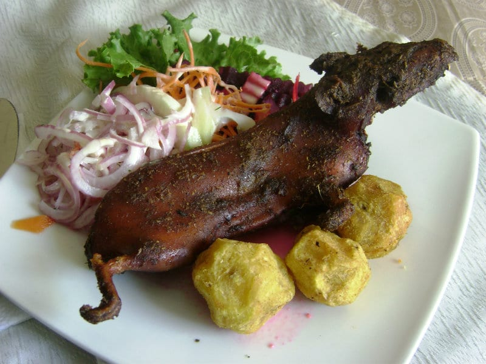
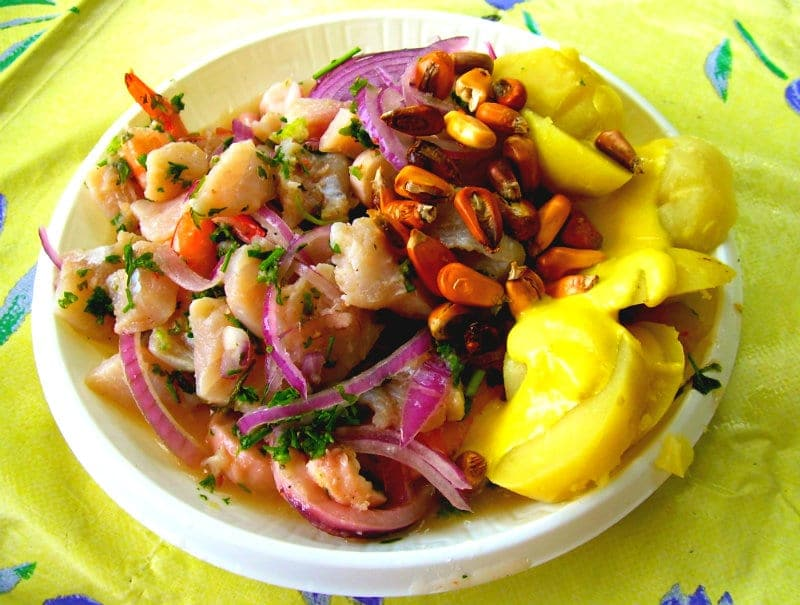
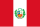

Peruvian food is celebrated worldwide for its diversity and bold flavors, blending indigenous traditions with European, Asian, and African influences.
fuses Chinese techniques with local ingredients, showcase this rich culinary heritage. Staples such as potatoes, corn, and quinoa reflect the country's biodiversity, while drinks like chicha morada and pisco sour add unique flair. across Peru the styles of dishes change from region to region. Climate plays a big role as it determines what foods are available.
One of the more unique delicacies in Peruvian food is Cuy, a baked or fried guinea pig served with potatoes. It's not a regular meal for Peruvians but is often served on special occasions such as holidays and birthdays. In fact, Peru also has a national holiday to celebrate the guinea pig.
It happens every year on the second Friday of October. across Peru the styles of dishes change from region to region. Climate plays a big role as it determines what foods are available.

Lomo Saltado is a stir fry dish that consists of marinated beef, onions, tomatoes, soy sauce, chili's, vinegar, spices, cilantro and french fries, usually served with rice. There are many variants of Lomo Saltado that you can try depending on where you go in Peru. But beef steak with fries, chilies and soy sauce is the most common and is the base for most variations.
Ceviche is the most famous dish that comes to mind when you talk of Peruvian food. It is very much a traditional staple of Peru.
Peruvian Ceviche has many variations but typically consists of chunks of raw marinated white fish cured in lemon or lime juices, spiced with chili and seasoned with salt. It is then served with sliced onions, cilantro, and sometimes tomato.
Traditional-style ceviche was marinated for about three hours. Modern-style ceviche, created by Peruvian chef Dario Matsufuji in the 1970s, usually has a very short marinating period.

Peruvian cuisine is a vibrant reflection of the country's rich cultural heritage and diverse geography. From the refreshing tang of ceviche to the bold flavors of lomo saltado and the traditional delicacy of guinea pig, each dish tells a story of Peru's history, ingredients, and culinary creativity. These iconic foods not only satisfy the palate but also offer a deeper appreciation for the traditions that make Peru unique.
